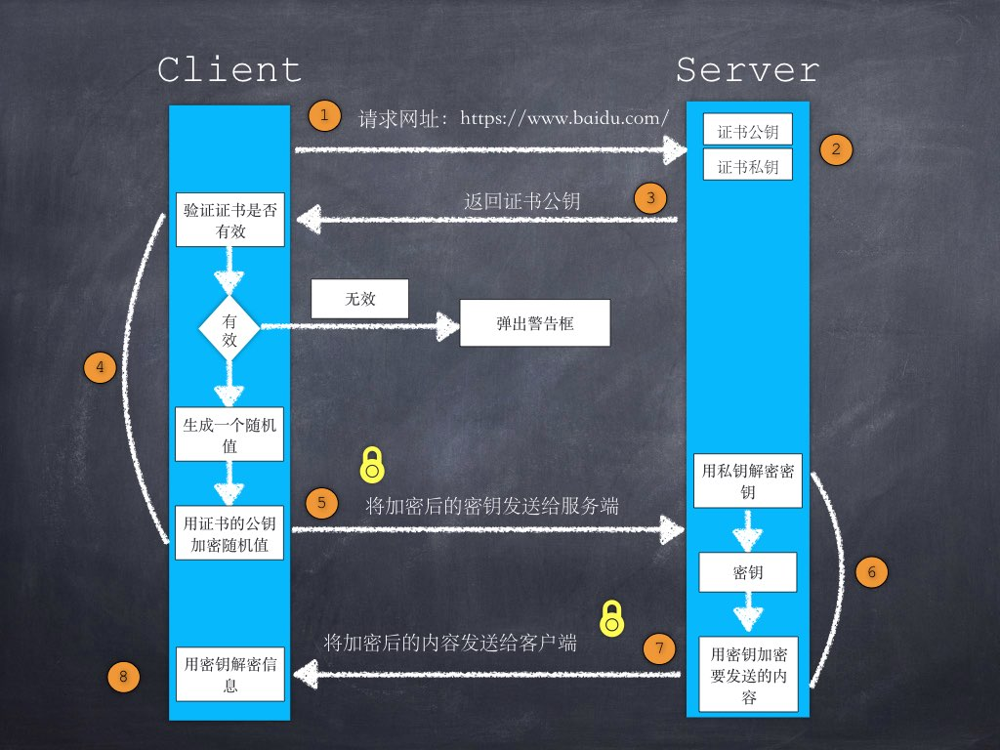

前端一般说到证书，大部分情况下指的是 HTTPS 证书，本文我们会介绍证书的相关知识及原理，以及 HTTPS 的工作过程。
日常工作中，哪些与证书相关？
网页 HTTPS，SSL 证书
在使用 Chrome 访问网页时，我们常常见到如下图所示界面，这是因为该网站使用的 HTTPS 证书不可信任，可能是发行方可信度降低，也可能是证书过期等原因导致的，一般情况下，大部分用户会选择关闭网页，这对网站来说是致命的。

Windows 代码签名证书
在 Windows 安装软件时，我们常常见到如下图所示界面，这是因为我们下载的软件包没有经过 Windows 证书代码签名，没有经过第三方认证，Windows 认为是未知来源，会给出图示警告：

在 Windows 开始中输入 certmgr.msc，打开证书管理器，我们可以查看系统中安装的所有证书：

Mac 中的证书
在 Mac 中，打开launchpad-其他-钥匙串访问-证书可以查看系统中安装的所有证书：

不使用证书的后果
从上面我们可以看到，网站和软件包未正确携带证书的后果：
不受 Windows 信任，安装软件的时候 Windows 提示该软件不安全
不受杀毒软件信任，软件下载下来就被杀毒软件告知该软件不安全
不受浏览器信任，浏览器告知“隐私设置错误，您的链接不是私密连接”
这些系统和浏览器的告警，会直接导致用户的流失，影响产品生命力。
证书的组成
上一章节讲了日常见到的证书，接下来讲一下证书的组成。

打开一个证书查看详情，我们见到如上图所示，可以看到证书的组成有以下几个部分：
1、公钥
2、证书拥有者身份信息
3、数字证书认证机构（发行者）信息
4、发行者对这份文件的数字签名及使用的算法
5、有效期
6、指纹以及指纹算法【hash算法】
7、Version Number，版本号
8、Serial Number，序列号
9、根证书：根证书是CA（国际公认的数字证书认证机构）自己的证书（自己给自己签名的证书），是证书验证链的开头，内置在各大通用的系统和浏览器里面。（自签发的数字证书，要被各软件信任是不容易的，违规被浏览器列入黑名单的CA、SSL证书，荷兰有一家 CA 因为被黑客入侵后来破产倒闭了）
HTTPS 中证书的工作过程
在介绍证书的工作原理之前，我们首先简单介绍一下 HTTPS 中证书的工作过程：

1、客户端发起HTTPS请求 用户在浏览器里输入一个HTTPS网址，然后连接到服务端的 443 端口。
2、服务端的配置 数字证书，由公钥和私钥组成。如果对公钥和私钥不太理解，可以想象成 1 把钥匙和 N 个锁头，全世界只有服务器有这把钥匙，任何访问服务器的客户端都可以获得一把锁头，然后用这个锁把重要的东西（比如：登录密码）锁起来传给服务器，因为只有服务器有这把钥匙，所以只有服务器才能看到被这把锁锁起来的东西。
3、传送证书 证书 = 公钥（锁头）+ 其他信息（证书的颁发机构，有效期等）。
4、客户端解析证书 由客户端的SSL/TLS来完成的，首先会验证公钥是否有效，比如颁发机构，过期时间等等，如果发现异常，则会弹出一个警示框，提示证书存在的问题。如果证书没有问题，那么就生成一个随机值（后面通信用的私钥）。然后用证书（也就是公钥）对这个随机值进行加密。就好像上面说的，把随机值用锁头锁起来，这样除非有钥匙，不然看不到被锁住的内容。
5、传送加密信息 这部分传送的是用证书加密后的随机值，目的是让服务端得到这个随机值，以后客户端和服务端的通信就可以通过这个随机值来进行加密解密了。
6、服务端解密信息 服务端用私钥解密后，得到了客户端传过来的随机值，然后把内容通过该随机值进行对称加密，将信息和私钥（被加密的随机值）通过某种算法混合在一起，这样除非将私钥解密，不然无法获取内容，而正好客户端和服务端都知道解密这个私钥，所以只要加密这个随机值的算法（后面会讲的非对称加密）够彪悍，数据就够安全。
7、传输加密后的信息 这部分信息就是服务端用私钥加密后的信息，可以在客户端用随机值解密还原。
8、客户端解密信息 客户端用之前生产的私钥解密服务端传过来的信息，于是获取了解密后的内容。整个过程第三方即使监听到了数据，也束手无策。
证书的原理
接下来我们讲一下证书的工作原理，而其原理的核心就是——加密算法。随着密码学的发展，加密算法可分为两类：不可逆加密和可逆加密。
不可逆加密
不可逆加密分为两种：信息摘要（Message Digest）和安全散列（Secure Hash）算法。
常见算法：MD5、SHA1、PBKDF2、bcrypt等，此类算法可将任意大小的原始数据变换成规定长度的输出，即获取内容的数字指纹，常用于校验原始内容是否被篡改。
可逆加密
可逆加密分为三种：古典加密算法、对称加密算法、非对称加密算法。
古典加密算法
基于算法的加密算法，也被称为古典加密算法
如 http 认证中的 base64，比特币生成地址用的 base58（公开的算法也可称作编码方式）
对称加密算法
对称加密算法，加密和解密使用同一个密钥（密钥越大，加密越强，但加密与解密的过程越慢）
常见算法：DES、3DES、AES
优点：速度快效率高，适合对大量数据进行加密
缺点：密钥管理困难、安全性不高
非对称加密算法
非对称加密算法，加密和解密使用不同的密钥【现代密码学最伟大的发明】
常见算法：RSA（1977年，三位数学家Rivest、Shamir 和 Adleman 设计的一种算法，一文搞懂 RSA 算法）、DH（Diffie-Hellman 1976年，两位美国计算机学家Whitfield Diffie 和 Martin Hellman）、椭圆曲线算法（Elliptic curve cryptography，ECC）
缺点：效率低、能处理的数据大小有限制（对比“对称加密”来说，需要花费更长的时间来完成加解密的工作，所以一般非对称加密都是配合对称加密一起用的）
优点：高全性高（加密的核心要义）
RSA 的数学原理
简单实例讲解非对称加密算法 RSA 的数学原理，理解简单的数学原理，就可以理解非对称加密是怎么做到的，为什么会是安全的：
1、选两个互质数 p 和 q（越大越安全，p和q不能告诉别人），相乘得出一个大整数n，例如 p=61，q=53，n=pq=3233（这个数转为二进制有多少位，密钥的大小就是多少位，目前常用的 1024 位和 2048 位）
2、选 1-(p-1)(q-1) 间的随机选择一个质数 e = 17（e 必须和(p-1)(q-1)互质）
3、计算数学公式 ex+(p−1)(q−1)y=1，算出一个数字 d=2753，就可以满足：
3.1. 通过 n 和 e 这两个数据一组数据进行数学运算后，可以通过 n 和 d 去反解运算，反过来也可以。
3.2. 如果只知道 n 和 e，要推导出 d，需要知道 p 和 q，也就是要需要把 n 因数分解。4、上面的
(n=3233, e=17)这两个数据在一起就是公钥，(n=3233, d=2753)这两个数据就是私钥5、加密：需要加密的 m = 65，公钥 (n=3233, e=17)
6、加密公式：me ≡ c(mod n) 6517 ≡ c (mod 3233) （备注：mod 就是模运算，10 mod 3 = 1, 26 mod 6 = 2，就是 JavaScript 里面的 %）
7、得到密文：c = 2790
8、解密：需要解密的 c = 2790，私钥 (n=3233, d=2753)
8.1 解密公式：cd ≡ m(mod n) 27902753 ≡ m (mod 3233)
8.2 得到原文： m = 65
以上的推演步骤：满足用公钥加密，私钥解密（或反过来公钥加密，私钥解密），满足在只暴露公钥（只知道 n 和 e）的情况下，要推导出私钥 (n,d)，需要把大整数 n 因数分解。
然而目前因数分解是公认的数学难题，只能靠暴力穷举，而n数字越大，越难以用穷举计算出因数 p 和 q，也就越安全，当 n 大到二进制 1024 位或 2048 位时，以目前技术要破解几乎不可能，所以非常安全。
一般情况下我们会使用对称加密给数据加密，使用非对称加密加密对称加密生成的密钥，从而确保数据传输的安全性。快速又安全！
想自己计算的，提供两份数据供大家推演上述过程，然后这些小数是不会用来加密的，因为太容易被暴力破解。
1、p=3, q=5, n=15, e=7, d=13，我计算了 m=17 算出来 c=23，反过来用 c=23 能算出来 m=17。（这个是我算的，不知道是否正确 ::>_<::）
2、p=3, q=11, n=33, e=3, d=7
非对称加密的使用场景
公钥加密，私钥解密，主要用于通信：
HTTPS = HTTP + SSL/TSL通信中，要保证数据（密码 or 机密文件）不被人窃取，那肯定是不希望别人知道我的消息，我就把数据加密（公钥加密），只有我才能解密（私钥解密），私钥一定要好好保存不能被别人知道。
感兴趣阅读：完全图解 HTTPS私钥签名，公钥验证，主要用于签名（就像你在文件上签字，你的笔迹或者私章就是你的私钥）
签名，就是我认可这个数据，给它盖个戳，你可以信任我——“北京三快在线科技有限公司”，但是不能让别人冒充咱发消息，要保证只有咱自己才能盖这个戳（只有自己知道的私钥来签名），其他需要验证数据是否可信的人（Windows 和各大杀毒软件）拿公钥做验证。
iOS 签名机制
在 iOS 平台对第三方 APP 有绝对的控制权，一定要保证每一个安装到 iOS 上的 APP 都是经过苹果官方允许的，怎样保证呢？就是通过签名机制。
感兴趣的可以看这篇：iOS App 签名的原理用于访问 github 的 key：~/.ssh/ id_rsa 和 id_rsa.pub
token
手机银行兴起之前，网页的网上银行的硬件token
在家需要访问公司资源时需要的动态口令，有的公司也是提供的硬件 token。
证书的分类
- 加密证书
DV（Domain Validation）域名型验证
面向个体用户，安全体系相对较弱，验证方式就是向 whois 信息中的邮箱发送邮件，按照邮件内容进行验证即可通过；
OV（Organization Validation）组织型验证
面向企业用户，证书在 DV 证书验证的基础上，还需要公司的授权，CA 通过拨打信息库中公司的电话来确认；
Google 使用的是 OV 型证书，用 Chrome 打开会显示小锁头EV（Extended Validation）扩展型验证
这类证书的申请除了以上两个确认外，还需要公司提供金融机构的开户许可证，要求十分严格，且价格较贵，并且没有通配符证书。
Github 使用的是 EV 型证书，用 Chrome 打开会在地址栏显示公司信息
- 签名证书
- 普通签名证书
- EV 签名证书
FAQ：以上分类的证书的加密效果有区别吗？
没有。
如何获取证书？
国际公认的数字证书认证机构（简称 CA，Certificate Authority）付费购买
- Digicert、Symantec、GoDaddy、Comodo、GeoTrust、GolbalSign等
- 举个例子，赛门铁克的 Windows 签名证书
- 普通 1年：$499，2年：$869，3年：$1,249。（人民币 6.9 的汇率：3443， 5996，8618）
- EV 1年：$699，2年：$1,219，3年：$1,739。（人民币 6.9 的汇率：4823， 8411，11999）
Let’s Encrypt免费获取 SSL 证书- Let’s Encrypt 是成立于 2014 年的公益数字证书认证机构(CA)。
- Let’s Encrypt，免费好用的 HTTPS 证书
- 自制：OpenSSL
- 谷歌：如何自制证书（不要用百度搜索）